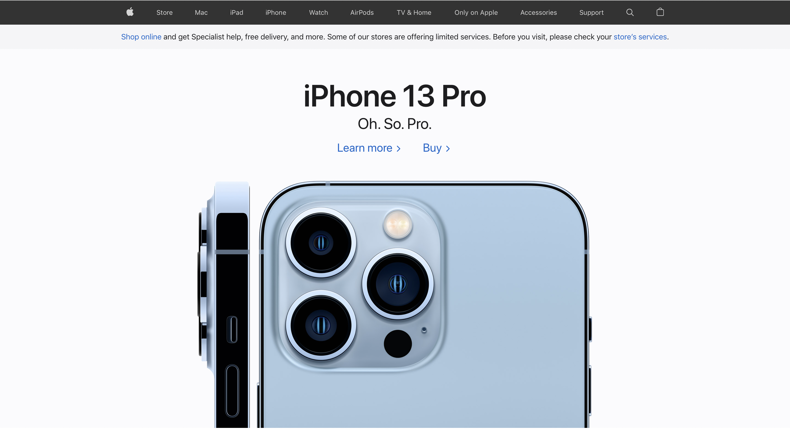

Links to Other Pages!
Zillow
URL
https://www.zillow.com/
This page is appealing because..

- When going on Zillow, you are typically looking to rent an apartment or look to buy a house!
You immediately are presented with the options to search for rentals or a property for sale, or you could look for both
and begin searching in an area!
- When I was apartment hunting, I loved the fact I could look for EXACTLY what I needed.
I was able to search for the number of rooms, bathrooms, and price that my roommates and I needed.
After filtering those, you get results on the map on the left and on the right you can see photos of the homes!
- After selecting the home you're interested in, you are given the contact information for the realtor
and depending on the home, you can even do the full purchase over the Zillow app. The UX as a whole I feel is very smooth.
I would definitely recommend others use Zillow for their rental and purchasing needs. At least as a start,
it makes for a great place to get an idea of pricing, taxes, and the location you are looking to move!
Apple
URL
https://www.apple.com/
This page is appealing because..

- When shopping on Apple's site, you are typically looking to purchase a new piece of technology for your day-to-day needs.
On the top menu, you are presented with essentially all of their flagship products which is what you are typically shopping for.
- I purchased a Macbook from Apple this past year, and it was incredibly easy to purchase new, and trade in my old Macbook Pro.
The site takes in the serial number of the old one, provides the value and applies it to the new one. They ship you the new,
you ship them the old, and the value gets applied. Incredibly simple for no in-store purchase.
- I feel the site is very visually appealing as a whole. You can see the specs of devices on their respective home pages,
yet, they are not thrown at you in a way that is hard to understand. They make each tile relevant to the page you are on,
and with no ads, it makes for a very clean experience that you would hope for when you pay the cost Apple charges for devices.
Would I recommend shopping on Apple's website, if you are an Apple consumer already, yes definitely! The experience is easy to say the least.
Now for someone who doesn't necessarily have any Apple products, I would say certain products are fine to exist on their own, but with an iPhone,
you truly get fully engulfed in the Apple Ecosystem for sure.